Cardo
Staff administration · Manual
Developed by Very Rev. Wellington de Oliveira, J.C.L.
Redemptoris Mater Archdiocesan Missionary Seminary · Boston · November 2026
Cardo and this manual were developed by Very Rev. Wellington de Oliveira, J.C.L., for Redemptoris Mater Seminary, Boston.
Cardo is the staff administration of the two websites of Redemptoris Mater Seminary: the main website and the campaign website The Chapel is Rising, both at rmsboston.org. From Cardo the staff edit every text and photo of both websites, answer messages and requests, follow donations and visits, and publish changes online.
Cardo works in any modern browser, on a computer, tablet or phone. Open it at rmsboston.org/cardo.html, or from the side menu (☰) of either website.
Sign in with your username — never an email — and your password. Sessions end after 12 hours.
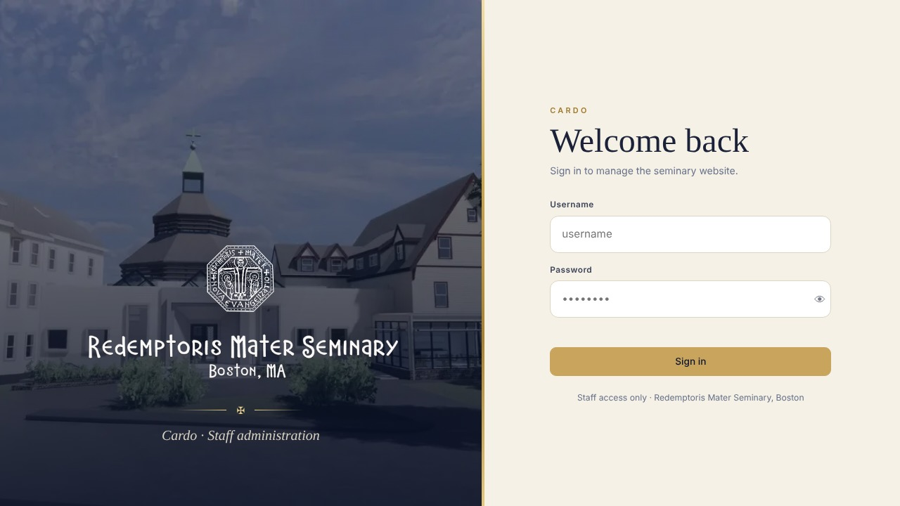
| Role | What it can do |
|---|---|
| Admin | Everything, including users, email recipients, backup and settings; can add, edit and delete entries of the Google Sheet (donations, brick requests, messages, sign-ups). |
| Editor | Edits and publishes both websites, answers messages and requests, marks brick requests as paid and alerts as solved. |
| Viewer | Can look at everything, cannot change anything. |
fr.wellington is the owner: he can always sign in, he cannot be removed or demoted, and only he can change his own password.
The menu on the left has five areas. Click an area to see only its pages:
At the top of every page: the alert bell (it blinks when something new arrives), Save, Publish now and Sign out. Links to both websites are at the top of the menu. A red number beside an area shows what is new there.
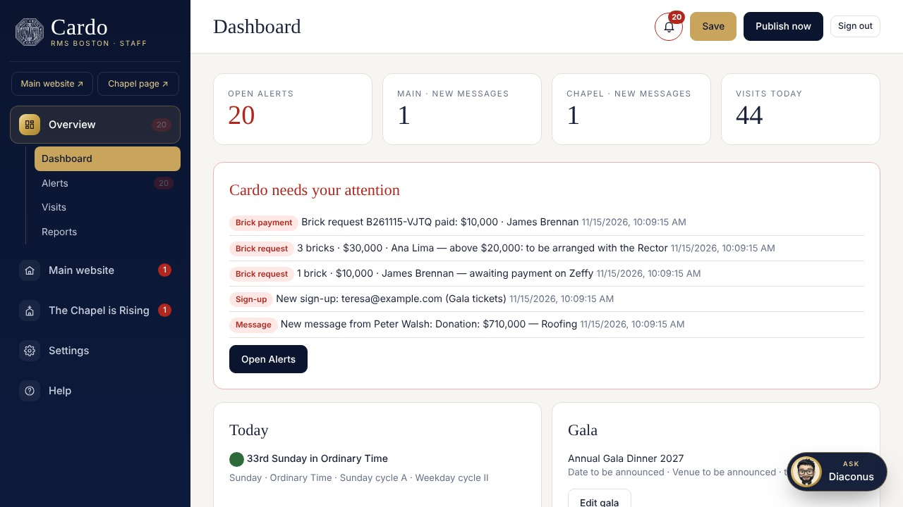
Open alerts, new messages of each website, today's visits, today's liturgy, the Gala and the latest messages.
Every new message, brick request, brick payment, sign-up and donation of both websites raises an alert. The bell blinks and the alert recipients receive the email “Cardo needs your immediate attention”. Opening the Alerts page records who saw each alert and when. When it has been handled, click Solved… and write what was done: Cardo records who solved it, the day, the time and the note. Open takes you to the message, request or donation; Reopen and Export CSV are also available.
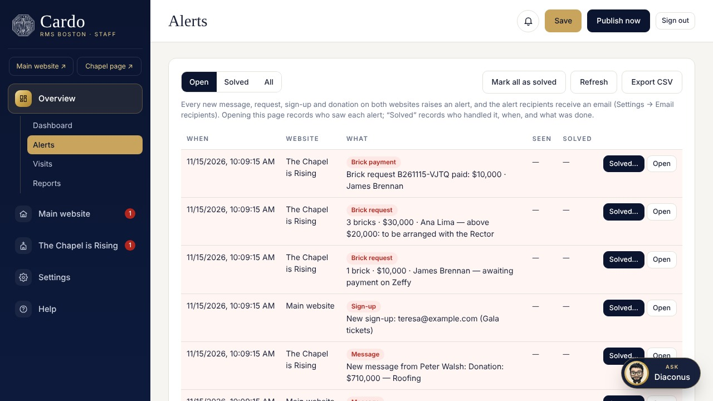
The hidden counter of both websites, by day, week or month, with today, this week, this month and the total, where visitors come from and the language of their browser. A visit is one visitor, one page, one day; no cookies and no personal data are used.
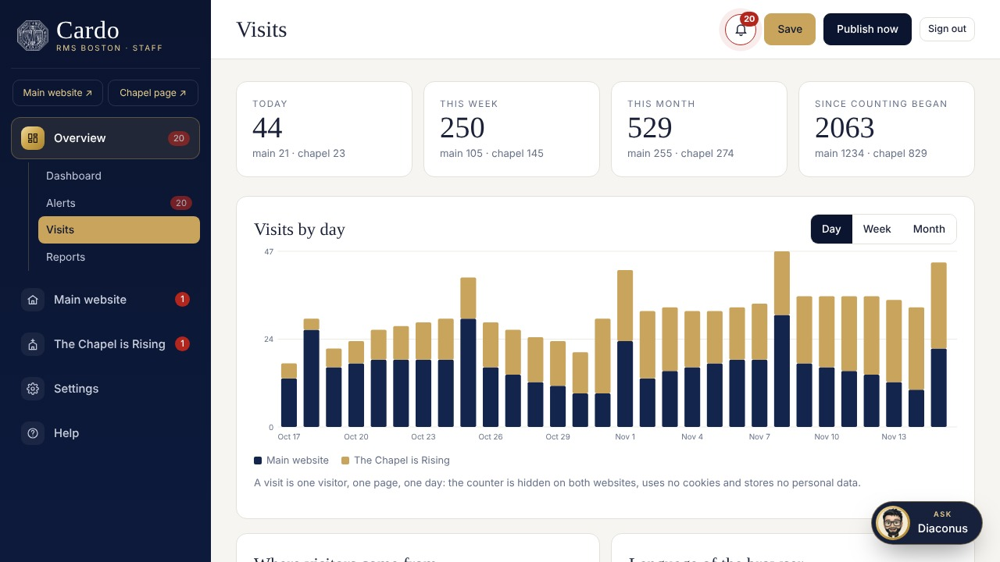
Choose a period (this month, last month, this year, everything, or your own dates). The report gathers donations by fund and by month, inscribed bricks, messages and sign-ups. Print / Save as PDF prints it; Download all entries gives a CSV file.
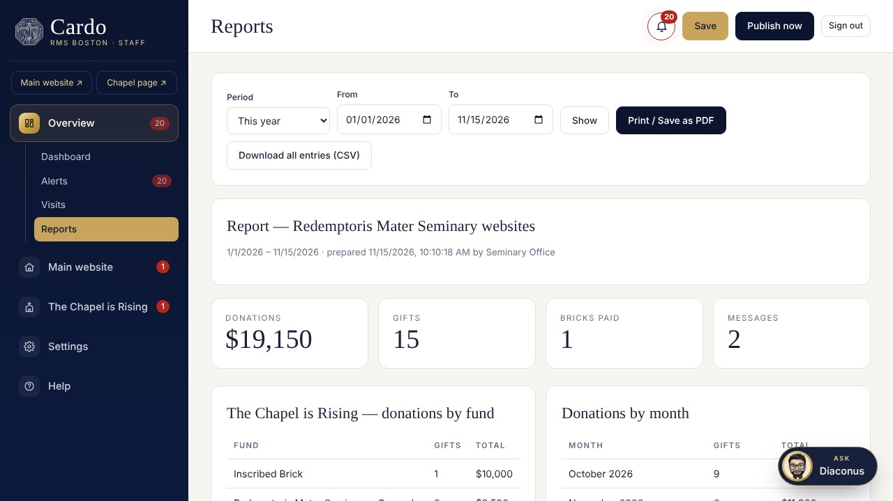
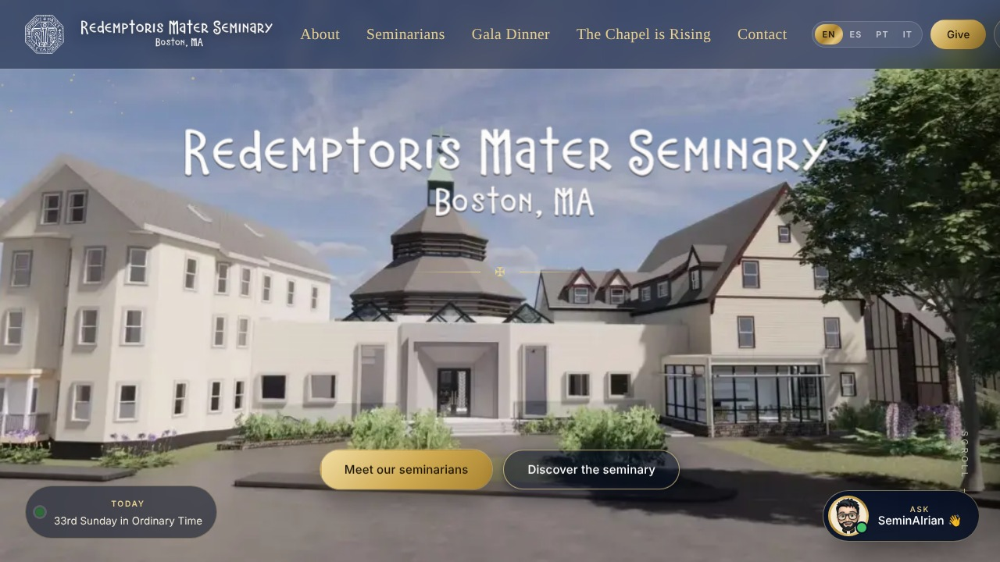
Each page of this area edits one section of the main website. Texts have four boxes: EN, ES, PT and IT. Lists have + Add, Edit, Delete and the arrows ↑ ↓ to change the order. Photos can be uploaded with Upload photo; large photos are reduced automatically.
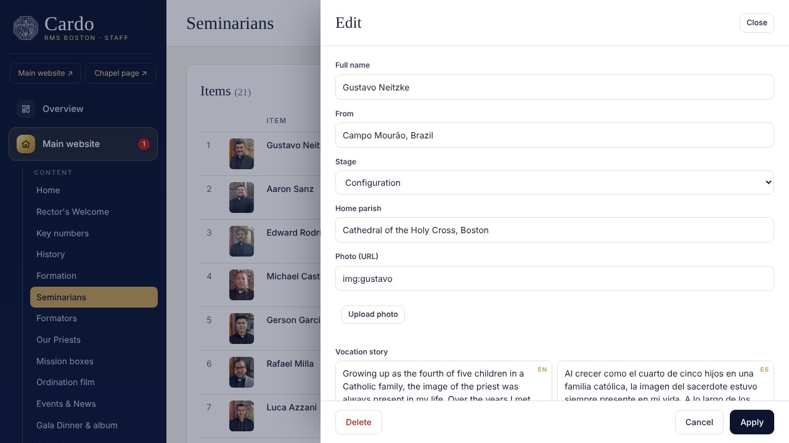
| Page | What it edits |
|---|---|
| Home | The front picture and the mission line under the seminary's name. |
| Rector's Welcome | The letter, signature and image. |
| Key numbers | The figures under the welcome. |
| History · Formation | The timeline; the stages of formation. |
| Seminarians · Formators | Names, origin, stage, parish, photo and story. |
| Our Priests | Every priest, assignment, church, city and coordinates; the map, the globe and the mission boxes are built from this list. |
| Mission boxes | “On mission beyond Massachusetts”: hide a box, or add a new one (a priest whose city is outside Massachusetts). |
| Ordination film | New priests in the film: photo, name and year. |
| Events & News | The cards of “Life of the seminary” — see chapter 6. |
| Gala Dinner & album | Title, date, venue, ticket status, what the ticket button does, and more album photos. |
| Gala history carousel | More years and photos for the carousel of past Galas. |
| Multimedia | YouTube videos. |
| Giving & sponsors | The Zeffy forms of GIVE and Sponsor a Seminarian, the four monthly amounts, Venmo, Cash App, PayPal and text to give. |
| SeminAIrian answers | What the website's guide answers, in four languages. |
| Liturgy | Sources of the Readings of the Day; the calendar check. |
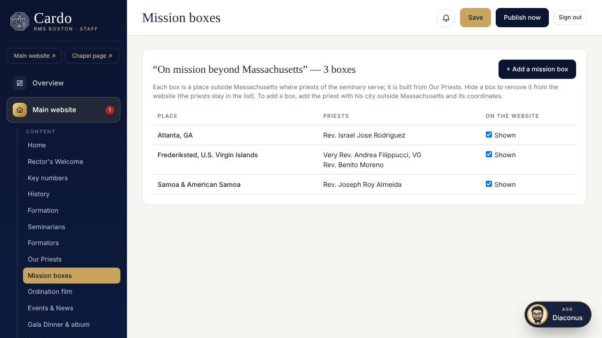
Untick a box to hide it from the website (the priests stay in the list). + Add a mission box opens a new priest: write his name, assignment, church, the city outside Massachusetts and its latitude and longitude (Google Maps → right-click the place → click the numbers to copy them).
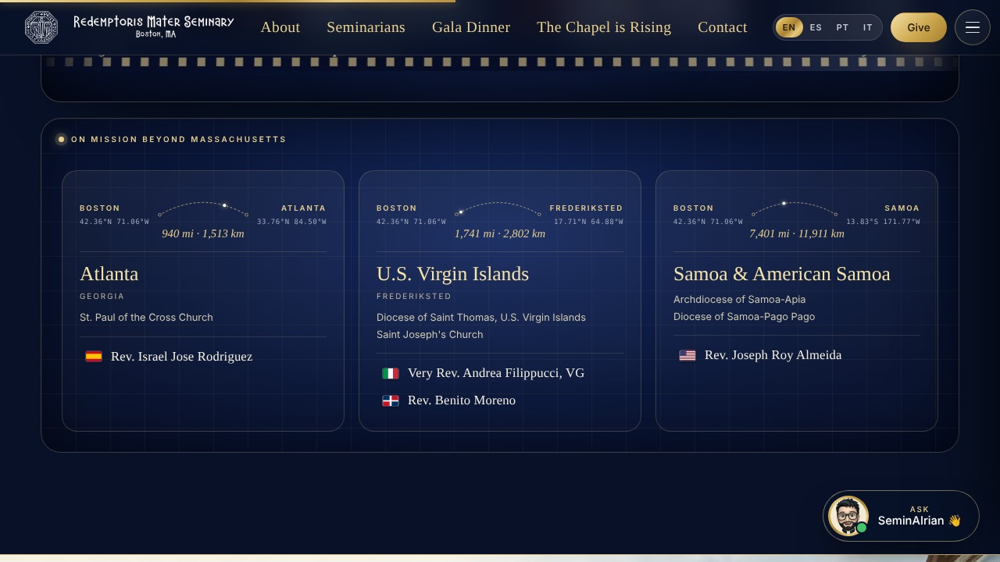
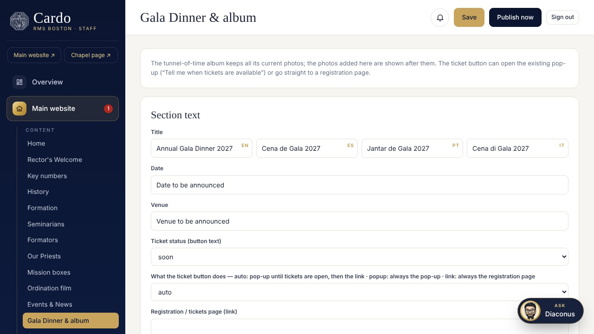
What the ticket button does: popup always opens the existing pop-up (“tell me when tickets are available”); link always opens the registration page written below; auto shows the pop-up until the ticket status is “open”, then the link.
The GIVE button at the top of the main website, and “Give online”, open the secure Zeffy pop-up of the form Redemptoris Mater Seminary – General Gift. Each of the four sponsorship options opens the monthly form Sponsor a Seminarian with its own amount already chosen.
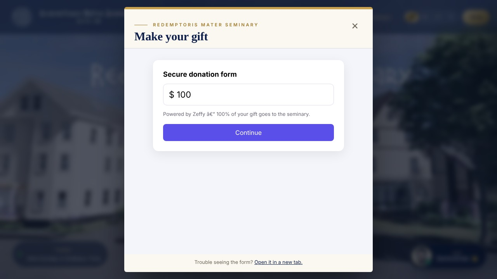
Messages keeps every message of the Rector's form; mark it read or done, export it; Admins can add a message received by phone, or delete one. A copy of each message is emailed to the alert recipients. Updates list holds the emails of those who asked for news or Gala tickets (copy all for BCC, export, add, remove). Donations lists the gifts made through the seminary's Zeffy forms; Admins can add a gift received by check, edit or delete one.
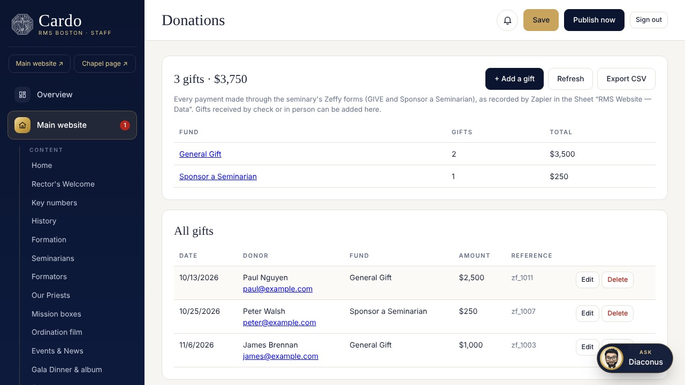
Each event or news item is one card in the carousel “Life of the seminary” on the main website. All cards have the same size. Open it in Cardo at Main website → Events & News.
| Field | What it does |
|---|---|
| Type | Written freely (for example Concert, Gala, Ordination, Retreat). It appears as the small label at the top of the card. |
| Date (as displayed) | Written exactly as it should appear, for example “December 20, 2026” or “2027 — TBA”. |
| Card photo | A photo that fills the whole card. It is shown complete, exactly as it is — no shadows, masks or darkening. |
| Show the title and text on top of the photo? | no (recommended): only the photo is shown. yes: the title, date and text are written over the photo. |
| Built-in logo · logo or picture | For a card without a photo: a logo shown above the text. |
| Title · Text | In English, Spanish, Portuguese and Italian. |
The list shows a small preview of each card's photo or logo, so you can see the order at a glance. Use ↑ and ↓ to change the order: the first card is the first one visitors see.
At the top of Events & News: yes — the cards change every 7 seconds; no — the carousel stays still until a visitor clicks the arrows or the dots.
As always: Save, then Publish now.
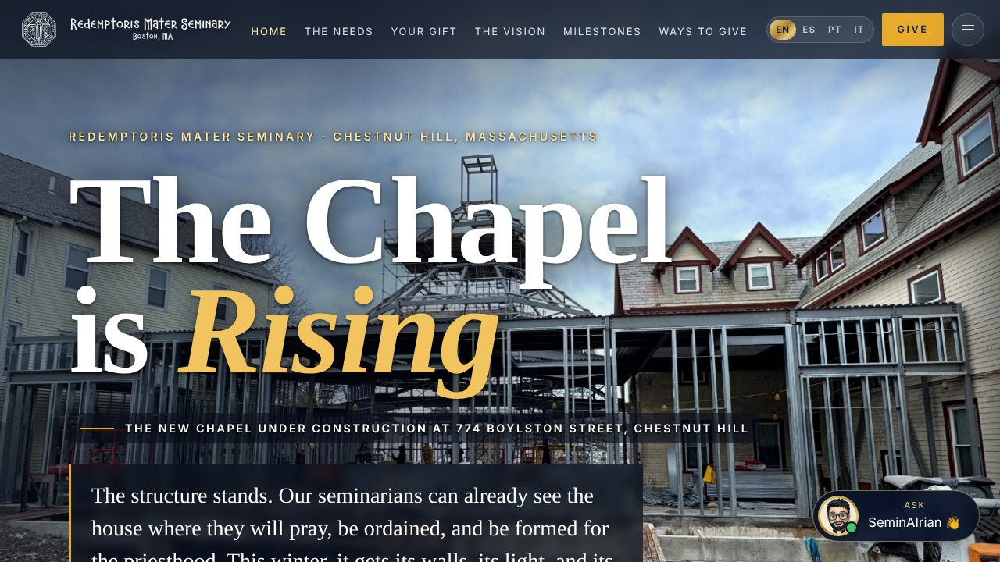
The campaign page has the same look as the main website: the seminary's logo and name at the top, a Home link back to the main website, the EN · ES · PT · IT buttons (the language chosen is the same on both websites), the side menu with links to both websites and to Cardo, the same footer with the CompliAssure certificate, and SeminAIrian.
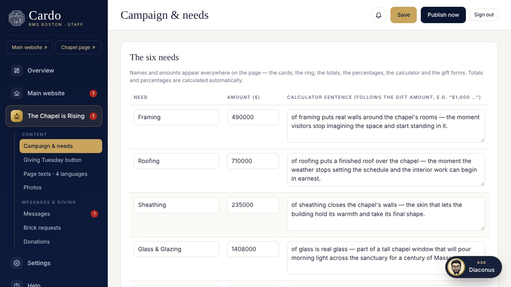
Names and amounts of the six needs (the totals, percentages, ring, calculator and forms follow automatically), the date of Giving Tuesday, the gift for one inscribed brick, and the text-to-give keyword and number. Each need has its own Zeffy form, so the six funds stay fixed.
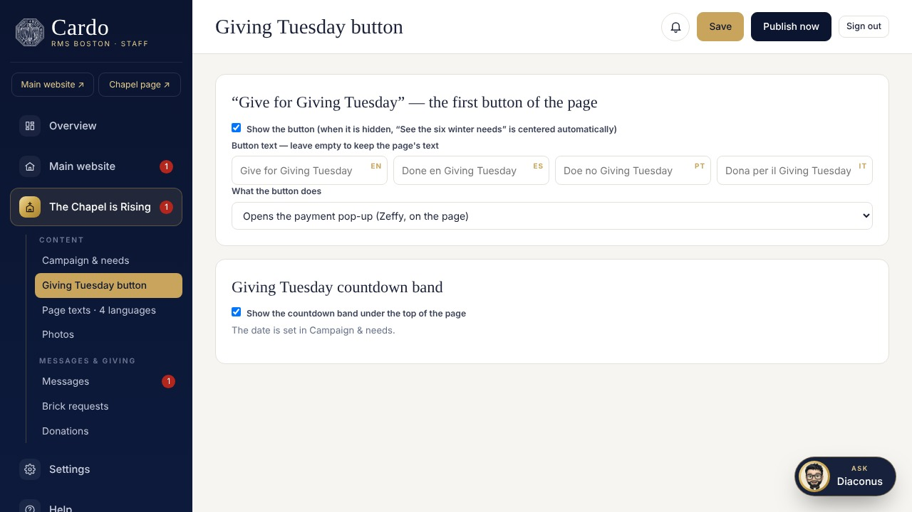
Show or hide the first button of the page — when it is hidden, “See the six winter needs” is centered automatically; rename it in four languages; choose what it does: the payment pop-up, the Zeffy form in a new tab, or a link of your choice; show or hide the countdown band.
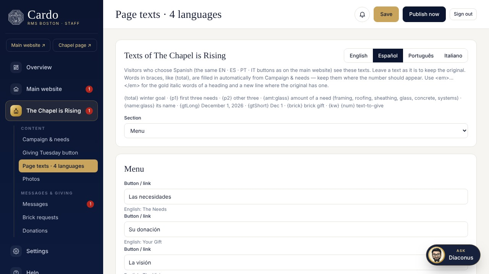
Choose the language (English, Español, Português, Italiano) and the section. Leave a text unchanged to keep the original; “use original” brings it back. Keep the words in braces, such as {total} or {brick}: they are filled in automatically. In the other languages, the English text is shown under each box, and the last section translates the names and sentences of the six needs.
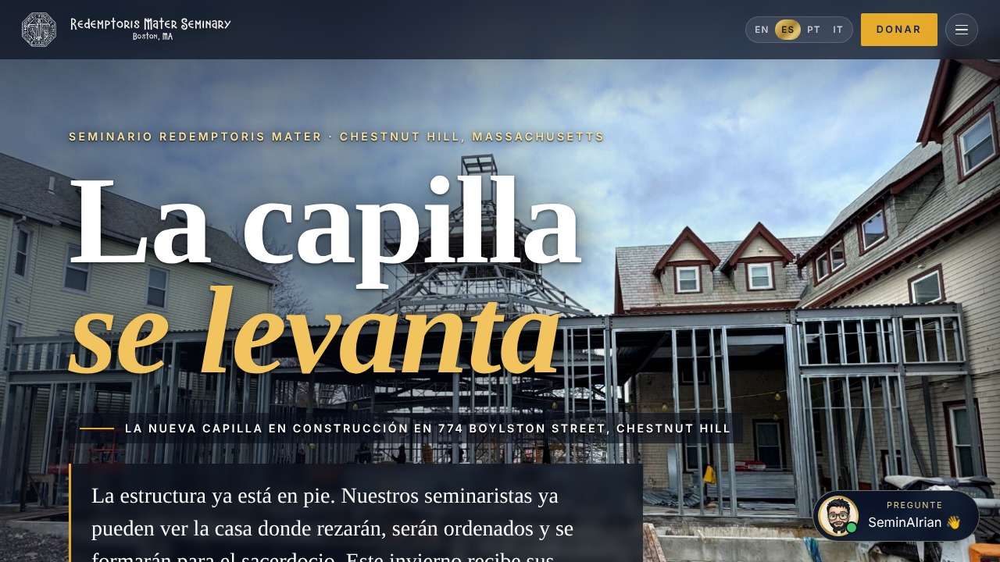
Replace any photo of the page; it keeps its place, size and frame.
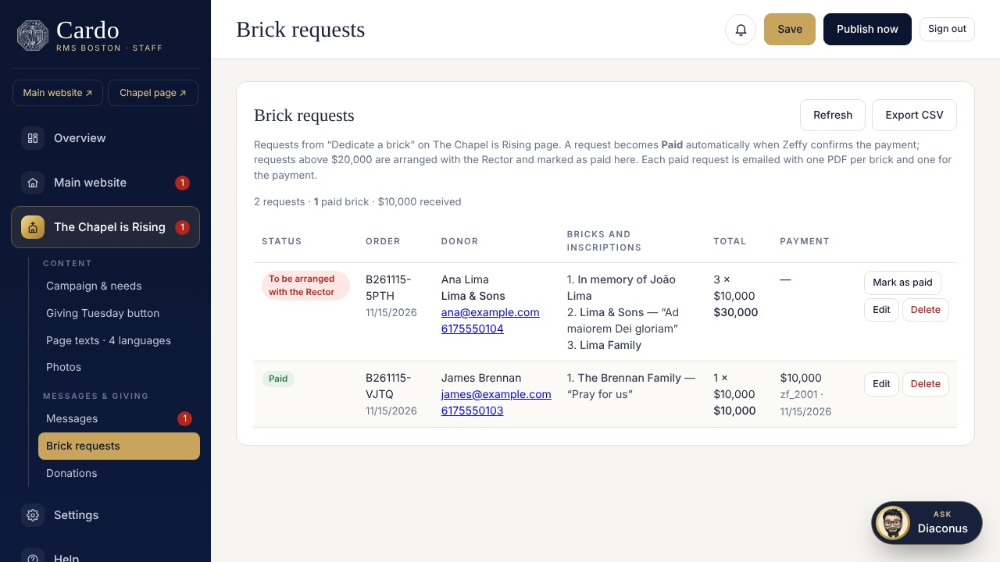
Messages: Give stock and gifts above $20,000. Brick requests: each request with its inscriptions (1 to 10 bricks, one payment). It becomes Paid automatically when Zeffy confirms the payment; requests above $20,000 are arranged with the Rector and marked as paid here. Each paid request is emailed with one PDF per brick and one for the payment. Admins can edit or delete a request. Donations: every gift to the six funds and the bricks, by fund.
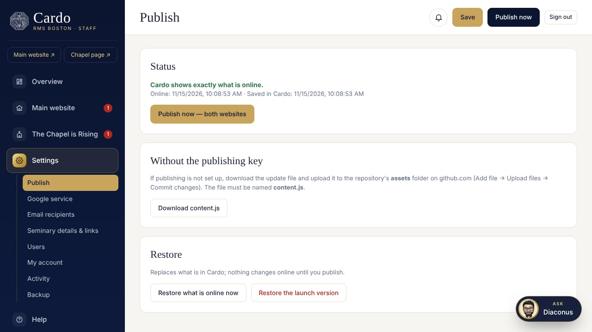
Shows whether Cardo matches what is online. Publish now (also at the top of every page) puts both websites online. Without the GitHub key, download content.js and upload it to the repository's assets folder. You can also restore what is online now or the launch version.
The one Google service (Google Apps Script, owned by the website's Google account) that runs everything: messages, sign-ups, readings, Give stock, gifts above $20,000, bricks, users, alerts, visits and publishing. Its data is the Google Sheet “RMS Website — Data”. Paste its Web app URL here once; the GitHub key for publishing is saved in the same page and is never shown on the website.
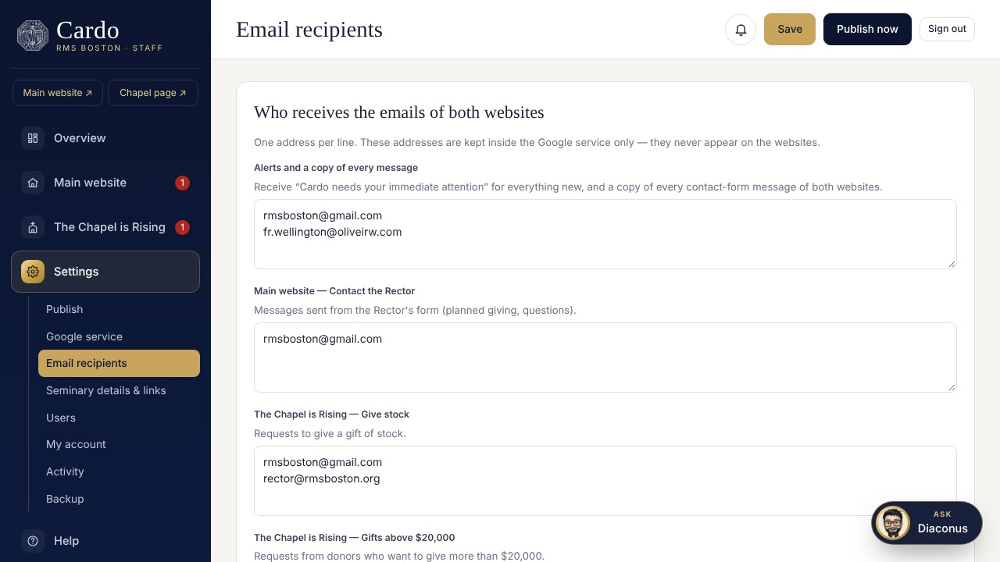
One address per line for: alerts and a copy of every message; the Rector's form; Give stock; gifts above $20,000; inscribed bricks. The addresses are kept in the Google service only.
The seminary's name, address, phone, email, Tax ID and social links; users and roles (add, change role, reset password, remove); your own password; the record of every sign-in and change by every user; a full backup of the content and its restore.
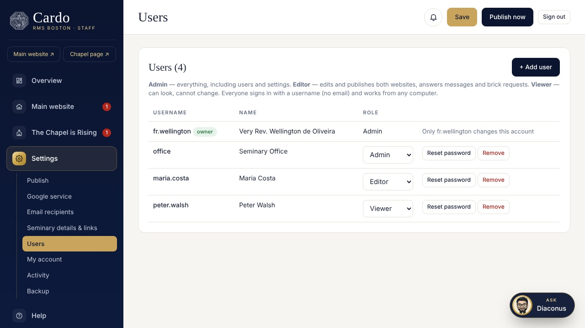
Diaconus is the guide to Cardo. The button “Ask Diaconus” is at the bottom right of every page. Diaconus answers only questions about Cardo: it explains how to do something and opens the right page.
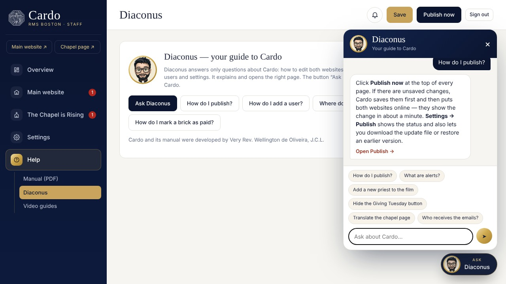
The Video guides (captioned, with music) show: 1. the main website in Cardo; 2. The Chapel is Rising in Cardo; 3. Overview, Settings and Help.